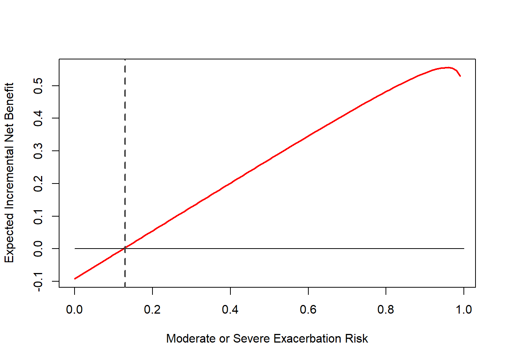

settings <- list(
dce_source="copd", #pooled: all participants, copd: copd patients, genpop: general public
n_sim=10000,
ci=F,
voi=F
)Patient-informed treatment thresholds
DCE results
Attribute orders: 1. Severe Lung attack 2. Moderate Lung attack 3. Major side effect 4. Minor side effect
attr_names <- c('SE','ME','HL','GI')
betas_pooled <- list(
mu=c(-0.0717416, -0.0283542, -0.0846835, -0.0181352),
covmat=matrix(c(0.0000086110, 0.0000005017, 0.0000065460, 0.0000014220,
0.0000005017, 0.0000037480, 0.0000003934, 0.0000008820,
0.0000065460, 0.0000003934, 0.0000193700, 0.0000017500,
0.0000014220, 0.0000008820, 0.0000017500, 0.0000030170
),nrow=4))
betas_copd <- list(
mu=c(-0.0565501, -0.0253486, -0.0807761, -0.0150339),
covmat=matrix(c(0.0000201800, 0.0000013160, 0.0000184700, 0.0000045580,
0.0000013160, 0.0000077010, 0.0000006628, 0.0000022490,
0.0000184700, 0.0000006628, 0.0000577300, 0.0000051100,
0.0000045580, 0.0000022490, 0.0000051100, 0.0000086650
),nrow=4))
betas_genpop <- list(
mu=c(-.0820105, -.0309518, -.0877532, -.0203261),
covmat=matrix(c(0.0000145600, 0.0000009249, 0.0000098190, 0.0000017450,
0.0000009249, 0.0000071730, 0.0000007213, 0.0000014790,
0.0000098190, 0.0000007213, 0.0000287100, 0.0000024510,
0.0000017450, 0.0000014790, 0.0000024510, 0.0000045650
),nrow=4))#All parameters used in this analysis
[1] "list(betas = list(mu = c(-0.0565501, -0.0253486, -0.0807761, "
[2] "-0.0150339), covmat = structure(c(2.018e-05, 1.316e-06, 1.847e-05, "
[3] "4.558e-06, 1.316e-06, 7.701e-06, 6.628e-07, 2.249e-06, 1.847e-05, "
[4] "6.628e-07, 5.773e-05, 5.11e-06, 4.558e-06, 2.249e-06, 5.11e-06, "
[5] "8.665e-06), dim = c(4L, 4L))), rr_exac = list(log_mu = -0.261364764134408, "
[6] " se = 0.0724346301890749), z = list(alpha = 22, beta = 78), "
[7] " inc_hearing_loss = list(alpha = 0.749965023511863, beta = 32.6071749352984), "
[8] " rr_hearing_loss = list(log_mu = 0.155292884406035, se = 0.0642483819379186), "
[9] " prev_gi_syms = list(alpha = 28945, beta = 58768), or_gi_syms = list("
[10] " logit_mu = 0.171429115627531, se = 0.226471141205469))" Betas
Loading required package: knitr attr_names mu se
1 SE -0.0566 0.0045
2 ME -0.0253 0.0028
3 HL -0.0808 0.0076
4 GI -0.0150 0.0029Main analysis
xs <- (0:99)/100
res <- INB(xs,settings$n_sim)
ys <- res$INB
zs <- res$p_uptake
i1 <-which.min(colMeans(ys)^2)
ys_mean <- colMeans(ys)
ys_ci <- apply(ys, 2, FUN = quantile, c(0.025,0.975))
plot(xs,ys_mean,xlab='Moderate or Severe Exacerbation Risk',ylab='Expected Incremental Net Benefit', type='l', col='red', lwd=2, ylim=c(min(0,min(ys_mean)),max(ys_mean)))
lines(c(0,1),c(0,0),type='l', col='black')
lines(c(xs[i1],xs[i1]),c(-100,100), col='#404040', lty=2, lw=2)
if(settings$ci)
{
lines(xs,ys_ci[1,], type='l', col='gray', lwd=1)
lines(xs,ys_ci[2,], type='l', col='gray', lwd=1)
}Optimal treatment threshold: 0.13
CEAC
ps <- apply(ys, 2, FUN = function(x) {mean(x>0)})
i2 <- which.min((ps-0.9)^2)
plot(xs,ps,type='l',xlab="Moderate or Severe Exacerbation Risk", ylab="Probability of Positive Incremental Net Benefit", lwd=2, col='red', ylim=c(0,1))
lines(c(0,1),c(0,0),type='l', col='black')
lines(c(xs[i1],xs[i1]),c(-100,100), col='#404040', lty=2, lw=2)P(INB>0) at 0 thresholds 0.1366 P(INB>0) at optimal thresholds 0.5452 Threshold where P(INB>0)=0.9 0.32
Marginal rate of substitution
require(knitr)
mrs <- MRS(res$params$betas)
kable(mrs$mu)| x | |
|---|---|
| SE | 1.0000000 |
| ME | 0.4482503 |
| HL | 1.4283989 |
| GI | 0.2658510 |
kable(mrs$ci)| SE | ME | HL | GI | |
|---|---|---|---|---|
| 2.5% | 1 | 0.3435077 | 1.195248 | 0.1679253 |
| 97.5% | 1 | 0.5699933 | 1.674091 | 0.3637430 |